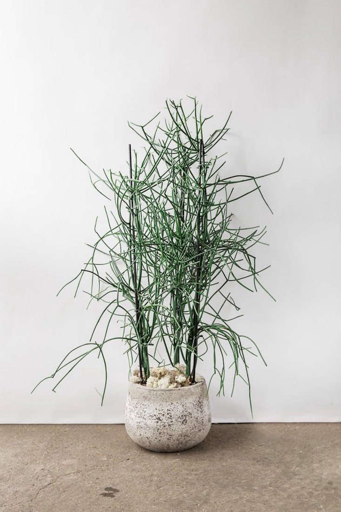
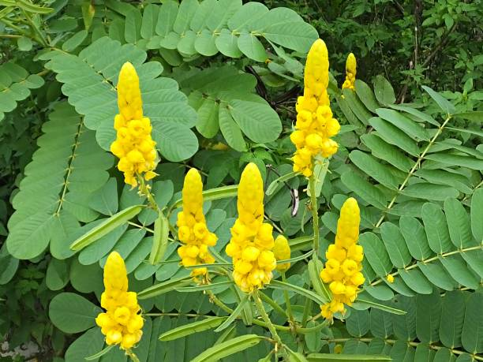
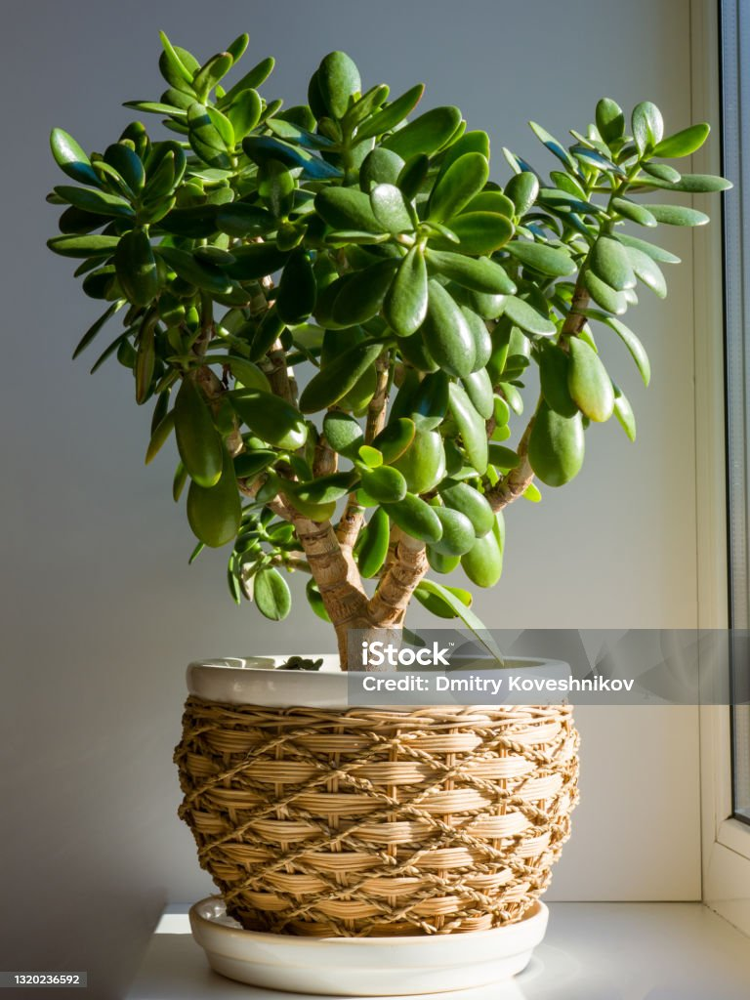
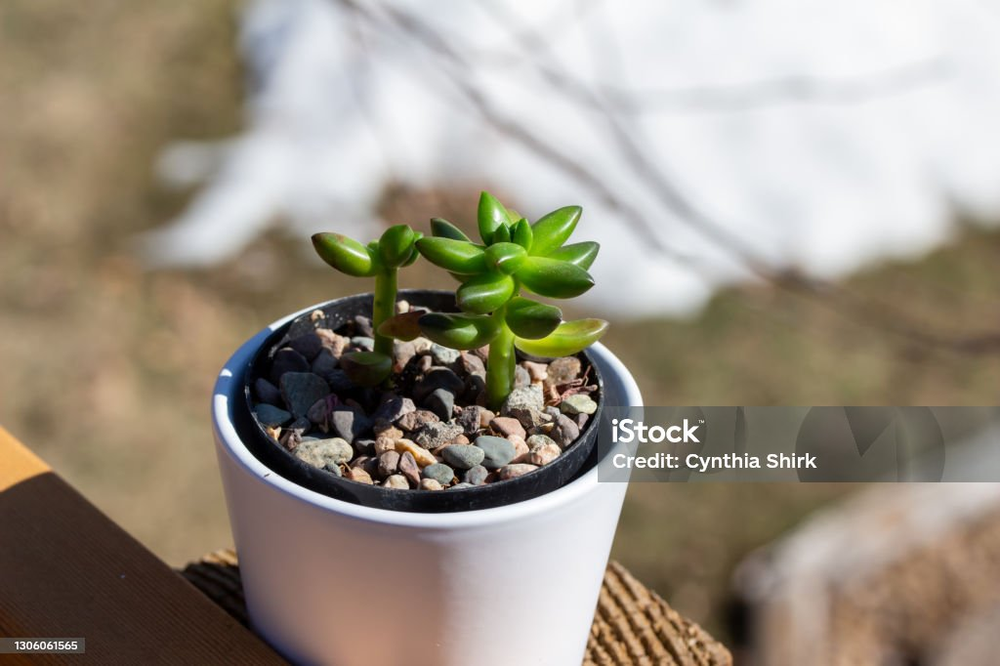
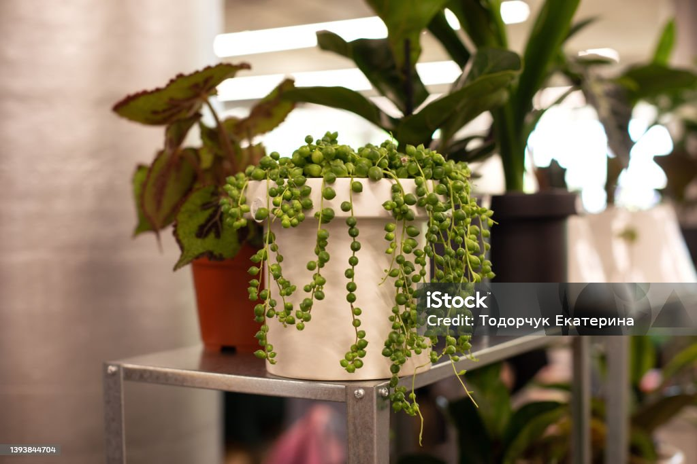

The pencil cactus, scientifically known as Euphorbia tirucalli, is a distinctive succulent plant belonging to the Euphorbiaceae family. Native to regions of Africa and parts of India, this plant is often recognized for its tall, slender, cylindrical stems, which can grow several feet high.

The candelabra cactus, scientifically known as Euphorbia ingens, is a large, tree-like succulent that belongs to the Euphorbiaceae family. Here are some key features and benefits of the candelabra cactus:

The jade plant, scientifically known as Crassula ovata, is a popular succulent known for its thick, fleshy leaves and tree-like appearance. It is often referred to as the money tree or money plant due to its association with good luck and prosperity in some cultures. Here are some key features and benefits of the jade plant:

Letizia, often referred to as the Letizia plant or African violet (Saintpaulia), is a popular flowering houseplant known for its vibrant, colorful blooms and soft, fuzzy leaves. While "Letizia" may also refer to various contexts, here we'll focus on the characteristics and benefits of the African violet, which is sometimes associated with the name Letizia in specific regions.

Sansevieria, commonly known as snake plant or mother-in-law's tongue, is a hardy succulent plant belonging to the Asparagaceae family. Known for its striking appearance and resilience, this plant is a popular choice for both indoor and outdoor gardening. Here are some key features and benefits of Sansevieria: